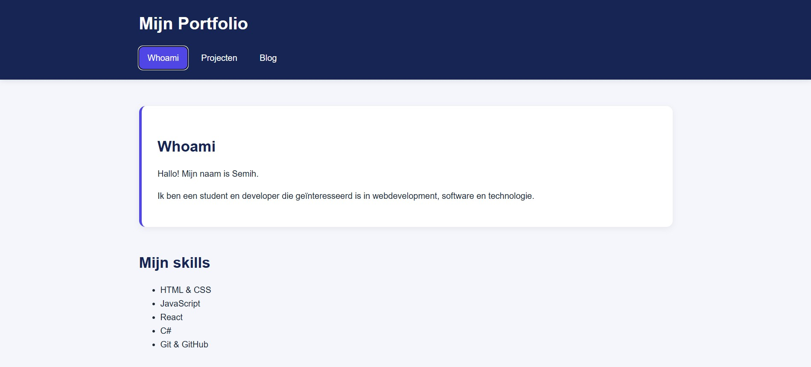
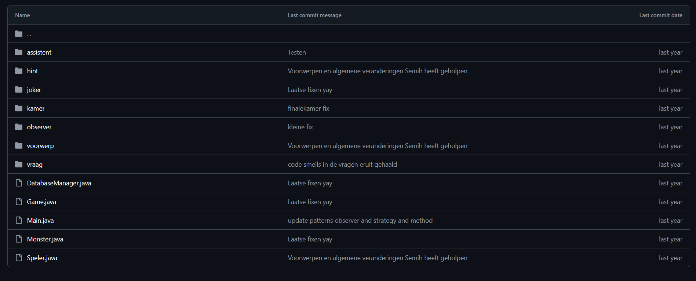

Portfolio Website
Een persoonlijke portfolio website gemaakt met HTML en CSS. De website bevat informatie over mijzelf, mijn projecten en mijn blog.
Technieken: HTML, CSS
Hieronder staat een overzicht van projecten waar ik aan heb gewerkt. (zitten ook WIP projecten bij)

Een persoonlijke portfolio website gemaakt met HTML en CSS. De website bevat informatie over mijzelf, mijn projecten en mijn blog.
Technieken: HTML, CSS

Een Escaperoom game waarbij je een Dungeon moest ontsnappen. Dit wordt gespeeld in een IDE, zoals IntelliJ. De Dungeon bevat puzzles, vragen en gevaarlijke monsters.
Technieken: Java